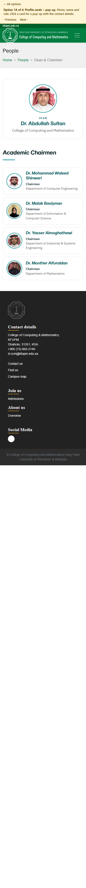
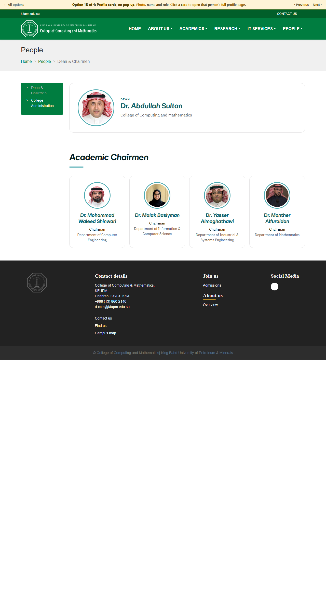
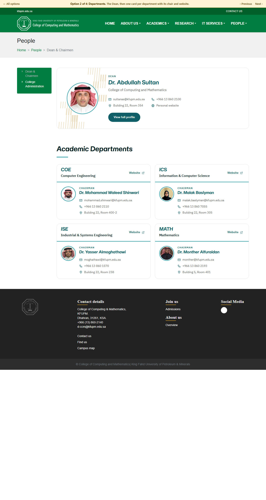
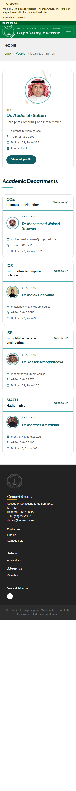
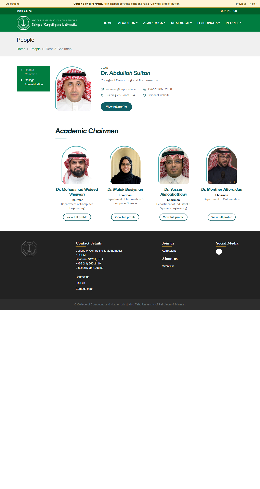
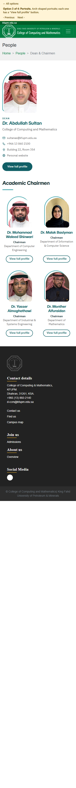

Your feedback from rounds 1 and 2, turned into four options. Every preview now shows the design inside the real CCM page: the same header, grey band, side menu and footer, at the real width beside the side menu. Open each option, then make the window narrow to see the phone layout. Mark each option under its picture, add comments, and copy your feedback at the bottom of the page.
What changed after your feedback
Round 3 (your notes on round 2):
- "View details" is gone from every card, the Dean's button and the chairs' links. The whole card is the click target.
- Option 1 is now two choices. 1A keeps the pop-up. 1B has no pop-up: clicking a card opens that person's full profile page.
- Option 3: the email, phone and arrow icons are replaced by one "View full profile" button per chair.
- Option 2 is unchanged.
Round 2 (your notes on round 1):
- The Dean always comes first and is the largest, in all three options.
- The four chairs are always the same size, side by side in one row on laptops and large screens, in alphabetical order of department code (COE, ICS, ISE, MATH). No one looks more important.
- Option 1 (was option 2, name cards): the beige panel behind the Dean is gone. The Dean is now in a white card with a "View details" button.
- Option 2 (was option 4, departments): about a third smaller. The department code went from 40px to 23px, chair photos from 96px to 72px. The Dean has no coloured background any more: a white card with a light beige KFUPM pattern behind the photo.
- Option 3 (was option 5, portraits): photos about 40% smaller (chairs 152px wide instead of about 260px, the Dean 176px instead of 260px), and no beige band.
- Removed: the org chart (old option 3). The contact list (old option 1) and the directory (old option 6) are not kept as separate options: their strengths are in options 2 and 3 (contact details visible) and in the Dean leading every option.
-

Option 1A
Profile cards + pop-up
Photo, name and role only. Click any card for a pop-up with the email, phone, office and a link to the full profile.
- Good for
- Contact details without leaving the page.
- Watch out
- The pop-up is a new kind of element on the site. In Sitefinity it needs the Embed code widget (tested, it works).
-

Option 1B
Profile cards, no pop-up
The same cards. Clicking one opens that person's full profile page, where all their details already are.
- Good for
- The simplest page: nothing new to learn, and it works in a normal Content block.
- Watch out
- Email and phone are one page away, on the profile.
-


Option 2
Departments
The Dean in a light card with the KFUPM pattern, then one compact card per department: its name, a link to its website, and its chair with contact details. Unchanged in this round.
- Good for
- Visitors looking for a department. Every contact detail is visible, and it links the four department websites.
- Watch out
- The longest of the three on a phone: the cards stack one under another.
-


Option 3
Portraits
Arch-shaped portraits, now smaller. The Dean's details are visible; each chair has a "View full profile" button.
- Good for
- The warmest, most personal feel.
- Watch out
- The chairs' email and phone are on their profiles. It looks best with new, matching photos.
Things to know
- Sizes checked on every screen. Beside the side menu, the content area is about 1076px wide on large screens, 926px on a 1280px laptop and 776px on a small laptop. Tablets and phones have no side menu: about 696px and 340 to 370px. The chairs sit four in a row from 720px, two by two on tablets, and stacked on phones (two per row in option 3).
- Photos. The new sizes keep today's photos sharp: the Dean's is 300 × 300px and Dr. Malak's web copy is 280 × 230px. New, matching photos would still help, most of all in option 3.
- Two profile links use old addresses. Dr. Malak's and Dr. Yasser's profiles open correctly, but their web addresses still say
dr.-motaz-alfarrajanddr.-anas-alghazi. Fix them in Content → People → URL. - Wording. The live site says "Chairman" for all four chairs, including Dr. Malak. You may prefer "Chair".
- College colour. The rings and lines use the CCM college colour, which still needs confirming with the KFUPM branding team.